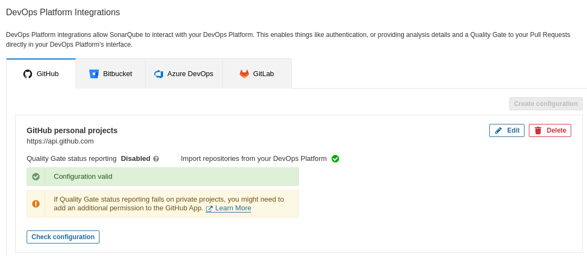
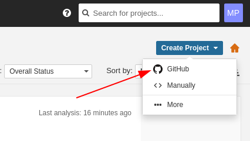
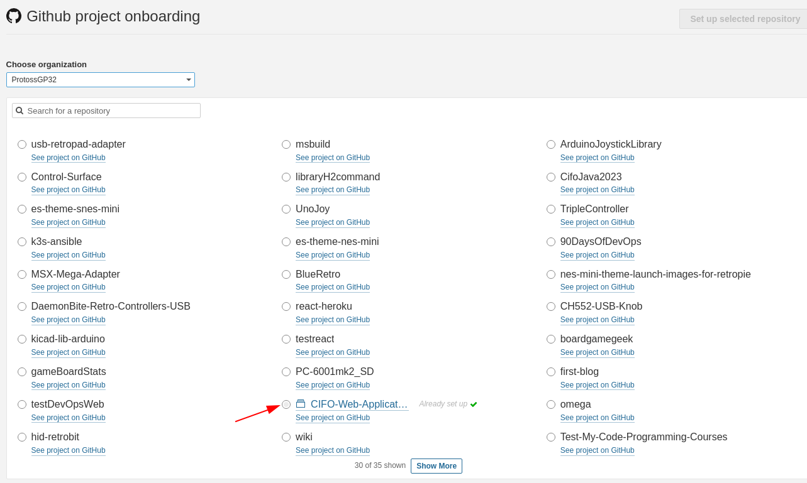
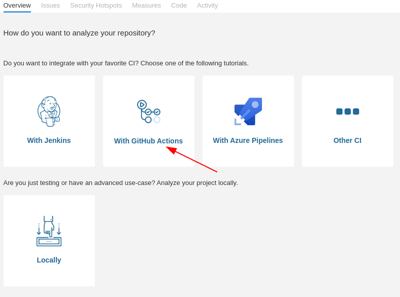
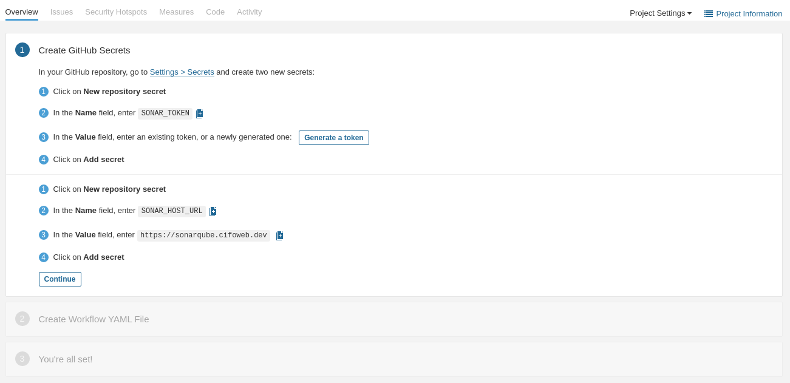
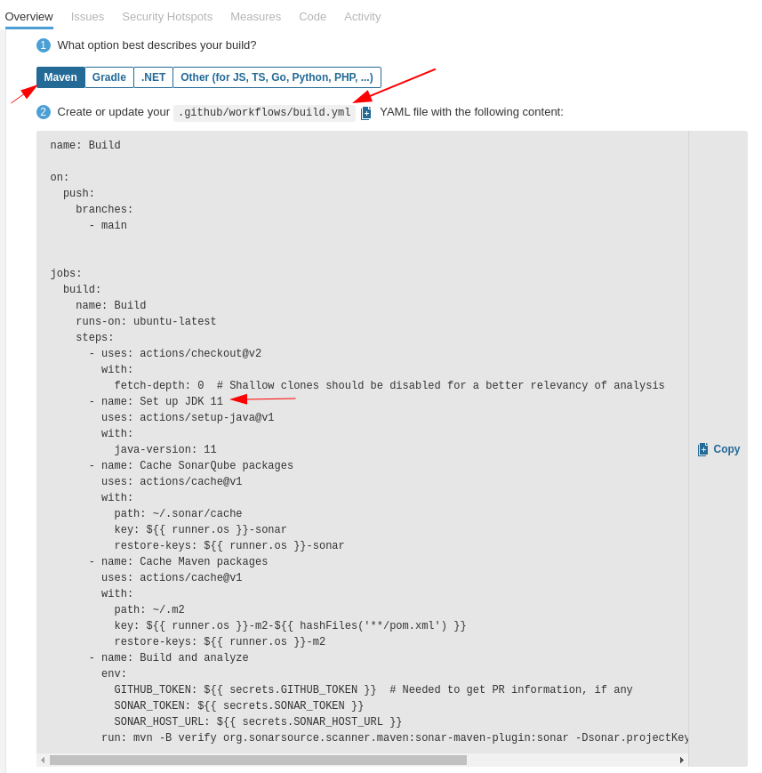

07 - Code analysis - SonarQube
Add properly explained procedure to deploy SonarQube, both on internal network and accessible from outside with HTTPS partially enabled
DevOps platform integration
Follow the official guide for deeper insights.
We’ll integrate SonarQube with one of our repositories to analyse it.
Prerequisites
Creating a GitHub app
Follow the official GitHub App creation guide to create a new app. The most important steps to be aware of are:
- The App name: short and concise, indicating its purpose. In our case we’ll define it as
SonarQube App - The description: A brief description regarding the app nature
- Homepage URL: mandatory, but for SonarQube we can use any URL. We’ll put the URL of our SonarQube instance
- User authorization callback URL: it’s our instance’s base URL, so in this case it would be the same as our Homepage URL
- Webhook URL: SonarQube guide recommends disabling this feature. We’ll explore this option in the future
- Permissions: configure the permissions as told in the SonarQube guide
Click on Create App and you’re finished
Installing the GitHub app in your organization
Follow the official GitHub App installation guide to install the newly created App into our organization (i.e. the server where SonarQube is running).
- Basically, browse to your GitHub Apps setting page and select your app
- In the left sidebar, click Install App and select your account
- Select whether you want the app to access all of your repositories or only some of them
Now your up is alive and running for your account
Updating the SonarQube global settings with the GitHub App information
Go back to your SonarQube account and follow the steps from the SonarQube guide:
Navigate to Administration > Configuration > General Settings > DevOps Platform Integrations > GitHub and specify the following settings:
- Configuration name: mandatory but only used in Enterprise and Data Center Edition. Give it a concise name, for example
GitHub personal projects - GitHub API URL: it’s always the same. As we are using GitHub.com, its URL is
https://api.github.com/ - GitHub App ID: found on your GitHub App’s page on GitHub at Settings > Developer Settings > GitHub Apps
- Client ID: same as with GitHub App ID, this info is found at the same place
- Client Secret: this is generated on the GitHub App page, by clicking the
Generate a new client secretbutton. Keep it safe as it won’t appear again! You can also encrypt it instead of saving it as plain text by following this guide. - Private Key: it is the GitHub App’s private key, in a
.pemform factor. Generate a private key by clickingGenerate a private keyin the App’s setting page, you have to save it in your machine. Then, copy and paste its content in this field. It can also be encrypted like the Client Secret. - Webhook Secret: as we’ve disabled Webhooks, leave this field empty
Once done, accept the settings. The integration should appear right after that, and if everything is correct, a green check should appear following the Configuration valid text:

Investigate how to include the secretKey file as a secret and overwrite its location in sonar.properties config.
Analyzing projects with GitHub Actions
Now that we have the GitHub App attached to our SonarQube instance, we can configure a GitHub Action to analyse our code on a trigger basis.
Create GitHub secrets
You can create repository secrets from your GitHub repository (more info here). Basically, we need to create two secrets that will contains SonarQube tokens (follow this guide to generate the required tokens):
- Sonar Token: Generate a SonarQube token and, in GitHub, create a new repository secret in GitHub with
SONAR_TOKENas the name and the generated token as the Value - Sonar Host URL: In GitHub, create a new repository secret with
SONAR_HOST_URLas the Name and your SonarQube server URL as the Value
Configuring your .github/workflows/build.yml file
The best way to prepare the Workflow .yml is to follow the steps that SonarQube gives you when creating a new project. Also, for GitHub Action to work there must be a project already created in SonarQube:
Login to your SonarQube instance and click on Create project. Then select GitHub:

SonarQube - Create Project button Select the organization and repository to analyse:

SonarQube - Select Repository Select the GitHub actions integration:

SonarQube - Select CI Integration Next, follow the steps to store some required secrets for GitHub to remotely connect to your SonarQube instance:

SonarQube - Create GitHub secrets After that, select the build type. In this case I’ll select Maven, and after that a YAML sample is provided:

SonarQube - Select Build type The YAML file configures the following steps:
- Checkout of the Repository
- JDK setup
- SonarQube packages cache initialization
- Maven packages cache initialization
- Build and analyze the project
- Check that the JDK version matches your project’s JDK version
- The SonarQube tutorial expects to execute
mvnfrom the repository root path! When working with monorepositories we need to change this on workflow YML. One way to do it is to define the proper path of thepom.xmlfile with the-foption: